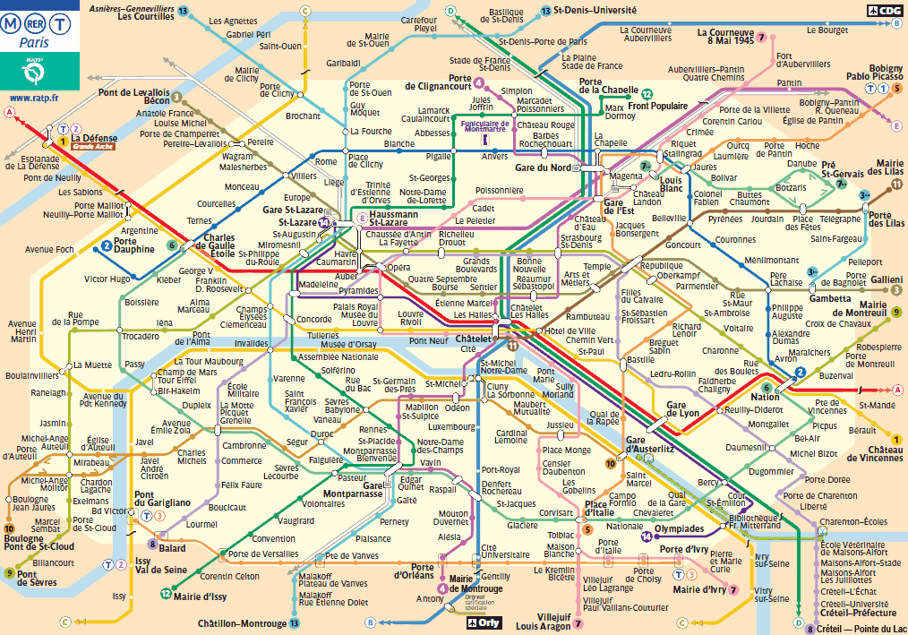
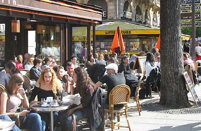

Tourism Paris
by Jie Tian
Contents
Paris is the capital and most populous city of France. Situated on the Seine River, in the north of the country, it is in the centre of the le-de-France region, also known as the region parisienne, "Paris region".
Paris has a timeless familiarity for first-time and frequent visitors, with instantly recognisable architectural icons, along with exquisite cuisine, chic boutiques and priceless artistic treasures.
Source: Wikipedia
Sightseeing
Paris offers the largest concentration of tourist attractions in France, and possibly in Europe. Besides some of the world's most famous museums, its has a vibrant historic city centre, a beautiful river scape, an extensive range of historic monuments, including cathedrals, chapels and palaces, plus one of the most famous night life scenes in the world.
Here are some famous attractions in Paris:
- Notre-Dame - one of the finest Gothic cathedrals in Europe. Climb the 400 steps to the top of the towers.
- Musee du Louvre - one of the world's great art galleries, with masterpieces such as the Mona Lisa.
- Musee d'Orsay - the museum of the nineteenth century, contain the works of the Impressionists.
- Eiffel Tower - take the lift to the top, for a spectacular panorama of Paris.
- Arc de Triomphe - the largest triumphal arch in the world, commissioned by Napoleon.
- Sainte-Chapelle - thirteenth century royal chapel, with remarkable stained glass windows.
- Sacre-Coeur - narrow streets, filled with artists, round the 19th century basilica on top of a hill on the north edge of Paris.
- Les Champs Elysees - one of the most famous streets in the world, a broad tree-lined boulevard.
- Seine River - take a trip on one of the famous Seine river boats, and see Paris from the river.

Left to right: Musee du Louvre, Arc de Triomphe, Seine River, Eiffel Tower
Images are from:
Expedia
European Trips
Destination360
Wikipedia
Transportation
-
Flight to Paris
There are two main international airports in Paris, Charles de Gaulle Airport and Orly Airport. You are more likely to arrive at Roissy-CDG from international flights through major airline carriers. You may arrive at Orly if you are travelling with a low-cost company or from another French or European city.
Here are lists of some websites you can use to search and book flight.
-
Going around in Paris
Like most big cities, Paris is not a place to visit by car. Parking can be expensive and the city has a great public transport network, with a fast underground network that stretches well into the suburbs.
You can find information about Paris ReR, Paris Metro, Maps, Tickets, Schedulers and Routes Planner from the following websites.
Image from: Paris Metro
Accommodations
From Hotels to camping, Paris boasts a wide range of accommodation for all budgets and all tastes. One way or another, it is useful to weigh up the pros and cons of staying in central Paris, or staying further out from the centre, or even in the suburbs.
-
Staying in Paris
Advantages: access, time. If you are only in Paris for a short break, staying centrally will allow you to spend more time seeing and doing things, and less time in trains, buses or taxis.
Disadvantages: hotels near the tourist areas are generally quite expensive; cheaper hotels are often in less attractive areas of the city, far from the tourist sights and attractions, or else on the edge. And if you come to Paris by car, parking will be a major extra cost.
-
Staying outside Paris
Advantages: hotels tend to be cheaper, and rooms may be bigger. If you choose a hotel that is near a train station, access to central Paris can be relatively easy and quick.
Disadvantages: check that the cheaper room cost is not offset by the extra travelling costs - though remember that it is advisable not to take your car into town. Also, if you stay in the suburbs, you'll have less time to enjoy Paris by night.
Find a Hotel: Paris Hotel Guide
Image from: Image Card
Restaurants
There are thousands of restaurants to choose from in Paris; as well as plenty of French restaurants, there are hundreds of Italian restaurants, pizzerias, Vietnamese restaurants, and restaurants serving food from just about every country in the world. There are also interesting French regional restaurants, serving traditional regional dishes.
There are restaurants all over Paris, because Paris is very much a lived-in city. The best concentrations of top-class restaurants in Paris are near the Champs Elysees, in the 8th, 16th and 17th arrondissements, where there are a good number of Michelin starred restaurants. For more affordable eating, and plenty of choice and atmosphere, try the small streets in the Latin quarter (5th and 6th districts), or on the Ile St. Louis.
For the best oriental cuisine, go to the Paris Chinatown, south from the Place d'Italie in the 13th.
Source: About France
Find a restaurants: Best Restaurants Paris
Why Paris
Paris, the ultra-cosmopolitan French capital city, has a long standing global reputation as a Mecca of art, culture, fashion, gastronomy, history and architecture. Called the City of Light, City of Love and Capital of Fashion, Paris is not only brimming with internationally famous attractions but is an energetic city where beauty and vivacity ever-weave its curvy streets. Paris' starring role on the global stage makes it a prime destination for travellers, who have many reasons to visit beyond the emblematic Eiffel Tower and the world-renowned wines.
Source: USA Today